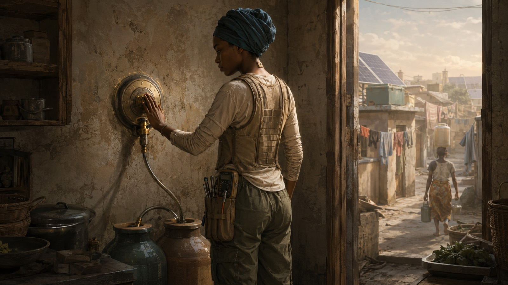
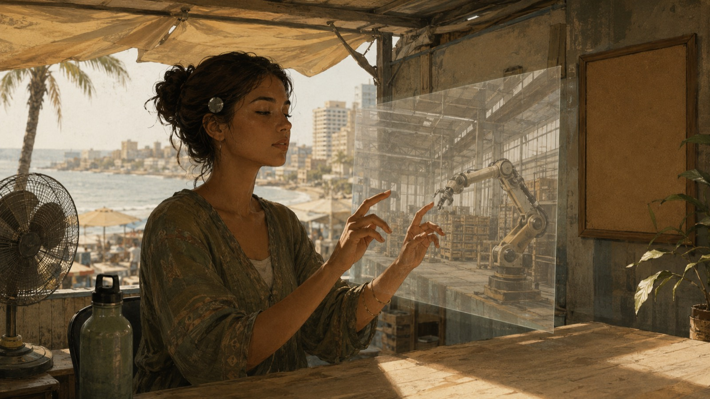

夜のあいだに冷えるはずだった金属が、もう熱を持ちはじめていた。
アディサ・ンジャイ、二十二歳。母と、十四歳の弟と、三階建ての集合住宅の二階に住んでいる。部屋はふたつ。窓には断熱フィルム。冷蔵庫はない——電気が高すぎるから、冷やしたいものは市場の共同冷蔵庫に借りた一区画に置く。台所の壁に埋まった真鍮の受け口が、この家でいちばん上等な設備だ。公共の配水管につながっていて、決められた時刻にだけ、決められた量の水を出す。
今日の配分は五時四十七分。分単位で決まるようになったのは、街の貯水が三度目の格付け直しを受けてからだ。彼女は受け口の下に素焼きの甕をふたつ並べ、手のひらを金属に当てて時刻を待つ。手首で、祖母の形見の銀のブレスレットが小さく鳴った。質屋に三度入れかけて、三度やめたものだ。
首の後ろで、パッチがひとつ、脈のように鳴る。
——配分、確保。冷却クレジット、残り二割。
家の代理人の合図は、言葉というより体温の変化に近い。三年前、政府の補助で入れた医療用のパッチだ。診療所の医者は「眠りと集中を助けるだけですよ」と言った。いまは家じゅうの水と電気と、彼女の一日の予定と、母の薬の在庫が、この親指ほどの一枚の下を流れている。画面は、もうほとんど見ない。ニュースも支払いも、体感で届く。二十歳の誕生日に、彼女はパッチの上に貼る織り布の小さな蓋を買った。オフラインになりたいとき、物理でふさぐための蓋。この街の若い者はみんな持っていて、蓋の柄を見れば、どの工房で織られたものか分かる。
＊
六時、屋上の塩水バッテリーの残量を見てから、気化冷却シャツに袖を通す。袖に細い管が縫い込んであって、水を含ませると腕から熱を逃がしてくれる。その上に、ジェル板の入った砂色のベスト。腰に工具のロールを巻く。ドライバー六本と、テスターひとつ。それが商売道具のすべてだ。
七時、市場の隅の屋台を開ける。壊れた扇風機、冷却ユニット、へたったジェルベスト。直せるものは何でも直す。学校は十六で出たが、機械は一度も彼女に嘘をつかなかった。向こうの国のバーチャル観光にも、セレブのフィードにも、心は一ミリも動かない——その手の流れ物は代理人が全部フィルタしてくれる設定にしてある。楽しいのは、死んでいた機械が動き出す瞬間と、夕方の海風と、父が置いていったラジオの古い音楽。それで足りている。
十一時、パッチが移動制限を告げた。ここから十五時まで、外を歩くことは推奨されない。推奨されない、は建前だ。実際には、歩けば倒れる。共有冷却所まで歩こうとして倒れた人が、今年はもう三人いる。
そして皮肉なことに、街がいちばん熱いこの四時間が、彼女の稼ぎ時だった。

組合の作業ブースは市場の裏にある。ベニヤの壁、日除け布の屋根、古い扇風機、素焼きの水瓶。木の腰掛けに座り、パッチの蓋を剥がして机に置くと、仕事が始まる。北の涼しい国の倉庫で、白いロボットの腕が、彼女の神経で動く。手の感覚は、そのまま金属の指になる。遠隔身体。身体はここに置いたまま、手だけを涼しい国へ送って働く。
今日の依頼は、いつもより実入りがよかった。水の配分を三日ぶん、まとめて確保できる額。ただ、末尾に一行あった。
——今回は注意ログと恐怖反応の提供を含みます。同意で単価が一段上がります。
作業のあいだ、どこで気を張り、どこで手が止まり、何にひやりとしたか。その記録を、向こうは欲しがっている。手の仕事より、内側のほうが高く売れる。
＊
「取れよ。三日ぶんだぞ」
屋台に戻ると、マレクがネジを回す手を止めずに言った。幼馴染で、屋台の相棒で、二十六歳。拾ってきた古い冷蔵ユニットを二人で直している。うまく動けば、昼の四時間、近所の子どもと年寄りをその前に座らせておける。
「兄さんは去年、それで単価を下げられたくせに」
「あれは、おれの集中が落ちたからだ」
「落ちて当然でしょう。全部見られてたら、誰だって擦り切れる」
マレクは答えなかった。ドライバーの先で、錆びたネジが鈍く鳴った。
アディサは、恐怖反応を売った日のことを覚えている。倉庫の高い棚。向こうの腕がぐらついた瞬間、背筋を走ったあの冷たさ。あれは、たしかに彼女のものだった。売った翌週、同じ棚の前で、体が先に固まった。あとになって知った。彼女の恐怖の形は解析されて、次の作業者を「ちょうどよく緊張させる」ための設定に使われていた。自分の怖さが、知らない誰かを追い込む道具になって、戻ってきた。
それでも断り切れないのは、共同保証があるからだ。階下のセック家、向かいのジャッロ家、路地の奥の二軒と、うち。五世帯で束になって信用を担保し合っている。誰かが仕事をひとつ落とせば、五軒ぶんの冷却クレジットの利率が上がる。母の薬——腎臓の薬は、その利率の上で回っている。「内側は売らない」と言えるかどうかは、彼女ひとりの勇気の話ではない。残りの四軒の、今夜の室温の話だ。
＊
昼を過ぎたころ、市場の掲示に新しい枠が立った。組合が、遠隔身体の依頼を「手だけ」で受ける契約を通したという。売るのは技能と時間だけ。注意ログも、恐怖反応も、脳のデータも、契約の外に置く。
「単価は一割低いよ」と、受付にいた組合の若い女は言った。「でもその一割は、擦り切れないための値段」
アディサは枠の前に立って、しばらく動かなかった。首の後ろでパッチが一度、静かに鳴る。母の薬も、四軒の利率も、何も解決していない。冷蔵ユニットは直りかけのまま、明日の配分はまた一分、削られるかもしれない。
それでも、指は動いた。どこまでを売るかの線を、生まれてはじめて自分で引いた。内側を売らずに、まだこの経済の中にいられる。
手のひらには、朝の受け口の熱が、まだ残っている気がした。売らないでおくものが、今日はひとつ、そこにある。